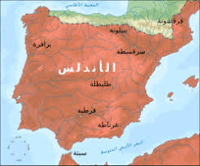

Título y descripción
Al-Ándalus: Ciencia, Cultura y Vida en el Mundo Islámico
Este proyecto propone un acercamiento al mundo islámico medieval, centrado en el estudio de Al-Ándalus desde una perspectiva múltiple. A lo largo de la unidad, el alumnado podrá explorar aspectos históricos, sociales, culturales y científicos, prestando especial atención a las aportaciones del islam en la Península Ibérica.
La propuesta combina contenidos de Geografía e Historia con Matemáticas, favoreciendo un aprendizaje significativo a través de metodologías activas. Como resultado final, el alumnado elaborará un escape room digital en el que integrará los conocimientos adquiridos durante el desarrollo de la unidad.

Temática
El eje central del proyecto es el estudio de Al-Ándalus y el mundo islámico medieval, abordando:
- La expansión del islam y su llegada a la Península Ibérica
- Las etapas históricas de Al-Ándalus
- La organización política y social
- La vida cotidiana y la diversidad cultural
- Las manifestaciones artísticas
- Las aportaciones científicas, especialmente en matemáticas
Se pretende que el alumnado comprenda la importancia histórica y cultural de esta civilización, así como su influencia en el desarrollo de Europa.
Nivel
Esta unidad didáctica está dirigida al alumnado de 2º de Educación Secundaria Obligatoria (ESO).
Los contenidos, actividades y metodología han sido diseñados teniendo en cuenta el nivel de desarrollo cognitivo del alumnado, así como los criterios curriculares correspondientes a este curso.
Temporalización
La unidad se desarrollará a lo largo de 10 sesiones de aproximadamente 50-60 minutos:
- Introducción al islam y su expansión
- Llegada del islam a la Península Ibérica
- Etapas de Al-Ándalus
- Sociedad y vida cotidiana
- Cultura y arte andalusí
- Ciencia y matemáticas en el mundo islámico
- Influencia de Al-Ándalus en Europa
- Trabajo cooperativo: diseño del Escape Room
- Elaboración del producto final
- Presentación y evaluación
Materias implicadas
Este proyecto tiene un enfoque interdisciplinar, integrando las siguientes materias:
- Geografía e Historia (materia principal)
- Matemáticas, a través de
- La numeración indo-arábiga
- Conceptos básicos de álgebra
- Aportaciones matemáticas del mundo islámico
- La proporción áurea
- La numeración indo-arábiga
Idioma
El desarrollo de la unidad se realizará en castellano, tanto en las explicaciones como en los materiales y el producto final.
Objetivos de aprendizaje
A través de esta unidad didáctica se pretende que el alumnado:
- Comprenda el origen y expansión del islam.
- Analice la evolución histórica de Al-Ándalus.
- Identifique las características de la sociedad andalusí y su diversidad cultural.
- Valore las aportaciones científicas y culturales del mundo islámico, especialmente en matemáticas.
- Desarrolle habilidades de trabajo cooperativo y pensamiento crítico.
- Elabore un producto final, que consistirá en elaborar un escape room digital donde integren los conocimientos adquiridos.
Este producto final refleja una visión global de Al-Ándalus, combinando aspectos históricos y matemáticos.
Producto final
El producto final de la unidad consistirá en la creación de un Escape Room digital.
El alumnado, organizado en grupos, diseñará una actividad interactiva en la que se integren los contenidos trabajados a lo largo del proyecto, incluyendo aspectos históricos, culturales y matemáticos.
Este producto permitirá:
- Aplicar los conocimientos adquiridos
- Fomentar la creatividad
- Desarrollar la competencia digital
- Trabajar de forma cooperativa
Justificación pedagógica
Esta unidad didáctica responde a la necesidad de ofrecer un enfoque interdisciplinar que conecte distintas áreas del conocimiento, en este caso Geografía e Historia y Matemáticas, favoreciendo un aprendizaje más significativo.
El estudio de Al-Ándalus resulta especialmente relevante en el contexto español, ya que permite al alumnado comprender una parte fundamental de su herencia histórica y cultural. Además, contribuye a fomentar valores como la tolerancia, la convivencia intercultural y el respeto por la diversidad.
La inclusión de las matemáticas se justifica por la enorme importancia de las aportaciones islámicas en este campo (como el sistema de numeración o el desarrollo del álgebra), lo que ayuda al alumnado a entender que el conocimiento es el resultado de intercambios culturales.
La metodología basada en un producto final promueve el aprendizaje activo, el trabajo cooperativo y el desarrollo de competencias clave como la comunicación lingüística, la competencia digital y el aprender a aprender.
La temporalización en 10 sesiones permite un equilibrio entre la adquisición de contenidos y el desarrollo práctico del proyecto, facilitando una progresión adecuada del aprendizaje.
En conjunto, esta propuesta busca no solo transmitir conocimientos, sino también desarrollar habilidades y actitudes fundamentales para la formación integral del alumnado.